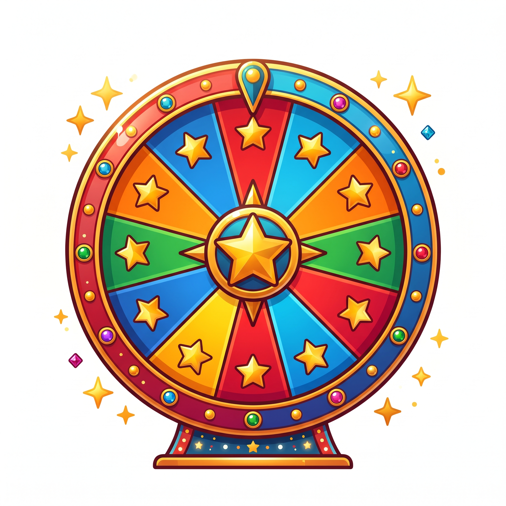
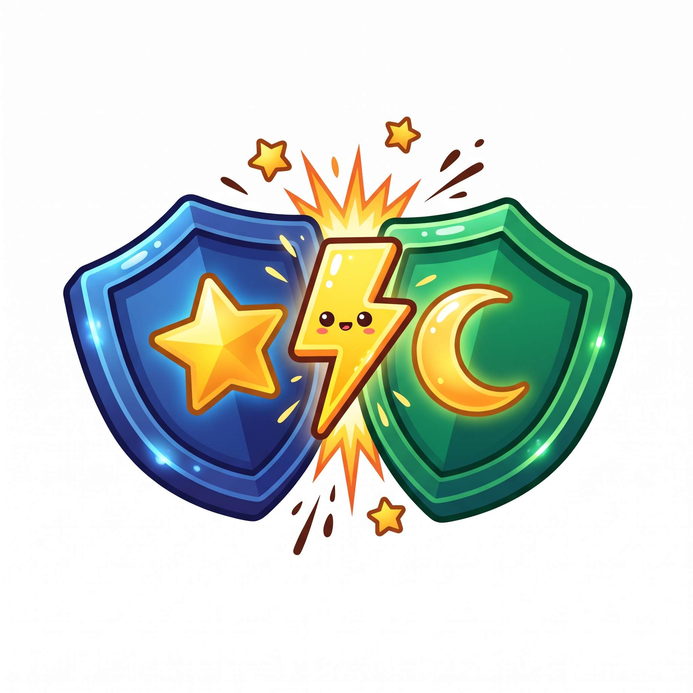

PERMAINAN 1 (ARCADE)
TANGKAP BINTANG
Tangkap bintang sifat terpuji Nabi yang jatuh dari langit!

PERMAINAN 2 (RODA PUTAR)
RODA MUKJIZAT
Putar roda kejutan & tebak gambar mukjizat Nabi!

PERMAINAN 3 (2 ANAK)
DUEL 2 ANAK
Tim Bintang vs Tim Bulan di Papan Kelas!